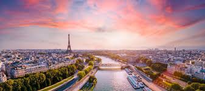

Paris
A cidade do amor, famosa por sua cultura, gastronomia e monumentos históricos.
Explore Paris com nossos pacotes exclusivos e descubra a magia dessa cidade encantadora.
Paris, a capital da França, é uma importante cidade europeia e um centro mundial de arte, moda, gastronomia e cultura. Sua paisagem urbana do século XIX é cortada por avenidas largas e pelo rio Sena. A cidade é conhecida por monumentos como a Torre Eiffel e a Catedral de Notre-Dame, uma construção gótica do século XII, sendo famosa também pela cultura dos cafés e por lojas de estilistas famosos na Rue du Faubourg Saint-Honoré.